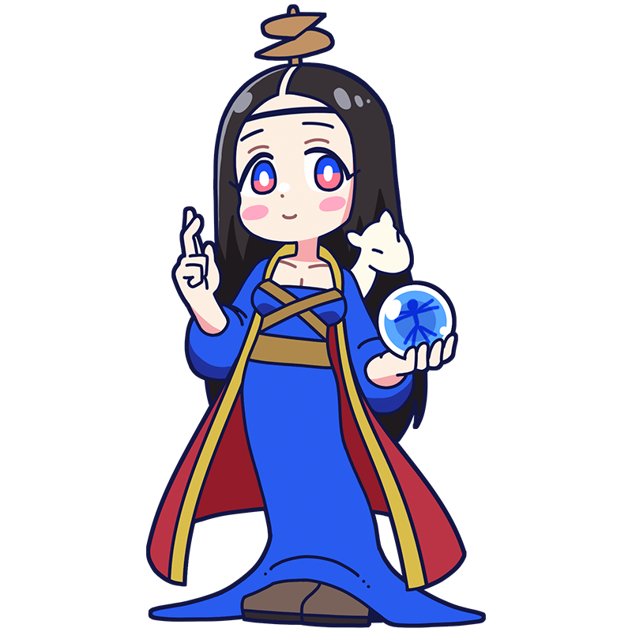

人類とは愚かなものです。
私が導いてあげませんとね。
レオナルド
神に近づく至高の超人
神秘と論理の到達点
「万能の天才」と称される、ルネサンス期、そして人類を代表する超人ミューズ。その発想力で影響を与えたとされる分野は数え切れない。一方でスケジュールにはてんで無頓着だが、天才なので問題ナシ。
様式
ルネサンス
出身国
フィレンツェ共和国(現イタリア)
代表作
- 『モナ・リザ』
- 『最後の晩餐』
- 『岩窟の聖母』など
レオナルドといえばこの一枚！
最後の晩餐
新約聖書にて、キリストが使徒たちと最後の晩餐を囲むシーンを題材としている。リズミカルに配置され生き生きと描かれた人物や、透視図を用いて描かれた背景はルネサンス美術の特徴をよく表している。歴史の中で激しい損傷を受けながらも500年近く現存している、まさしく奇跡の一枚だ。
制作年
1495-1498年
技法・材質
壁画、テンペラ
寸法
420 cm x 910 cm
所蔵
サンタ・マリア・デッレ・グラツィエ修道院
(イタリア)
作品画像出典: https://publicdomainq.net/leonardo-da-vinci-0020622/
レオナルドってどんな芸術家？
レオナルド・ダ・ヴィンチ
ルネサンスを代表する芸術家の一人であり、絵画・科学・建築など幅広い分野で才能を発揮した「万能人」。画家としては遠近法やスフマートなど先進的な技法を取り入れ、『モナ・リザ』や『最後の晩餐』といった、美術史に残る傑作を残した。また、飛行機械や戦車、コンタクトレンズなどの発明品の構想図を描くなど、その発想力は時代を大きく先取りしていた。「ダ・ヴィンチ」と呼ばれることが多いが、近年では個人名の略称として「レオナルド」と呼ぶ機会も増えている。
フルネーム
Leonardo di ser Piero da Vinci
誕生
1452年4月15日
死没
1519年5月2日(67歳没)